SPERA: ASCENSION OF THE STARLESS vol.2
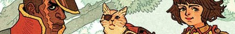
Now available from Archaia & BOOM!
Vincent is a shipwrecked privateer who has lost his crew to winged monsters.
Aya is an orphan seeking revenge on the Starless army who killed her family.
Through a series of unlikely coincidences, the warrior cat Chobo unites the two and leads them to Princesses Pira and Lono,
who are making their final preparations to leave Spera and do battle with the evil Starless Queen.
As the fire spirit Yonder infiltrates the Starless-occupied Plain Castle, the newly formed group is taken by surprise by another swarm of winged monsters.
Can Yonder survive his mission, and can the Princesses trust their new friends?
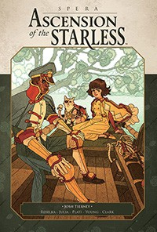
Spera: Ascension of the Starless Vol. 2 is written and edited by Josh Tierney, with cover art and character designs by Afu Chan.
The main story is illustrated by Jakub Rebelka, Marina Julia, Nuno Plati, Winston Young and Pablo Clark.
The book includes short comics by Joanna Krótka, Timothy Weaver, and Bobby Myers with Dana Miller,
and chapter covers by Olivier Pichard, E. Jackson with Blakely Inberg, João Lemos, Cleonique Hilsaca and Grim Wilkins.
>>>> Order the book
>>>> Purchase digital comics
SPERA: ASCENSION OF THE STARLESS vol.1
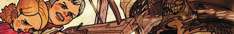
The Diamond Gem Award-nominated first volume is now available from Archaia & BOOM!
The Starless Queen is plotting an invasion of Spera, and has sent the merciless General Zeal to secure its capital.
Unfortunately for her, the Queen's obsession with killing Princesses Pira and Lono – her only daughter, and the last link to a conquered kingdom –
has resulted in the pair learning of her plans through captured scouts.
What began for the Princesses as a hunt for treasure is now a perilous journey to warn the Speran King,
leading Pira and Lono up a monster-infested mountain, through a village populated by crazed warriors,
and down dark tunnels walled with madness itself.
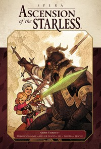
Spera: Ascension of the Starless Vol. 1 is written and edited by Josh Tierney, with cover art and character designs by Afu Chan.
The main story is illustrated by Giannis Milonogiannis, Atelier Sentô, Mindy Lee, Sourya Sihachakr and Valentin Seiche.
The book includes short comics by Victoria Grace Elliott, saicoink and Shelly Chen,
and chapter covers by Loïc Locatelli Kournwsky, Mathilde Kitteh, Thomas Rouzière, Guillaume Singelin and Guy Pascal Vallez.
>>>> Order the book
>>>> Purchase digital comics
SPERA: VOLUME III
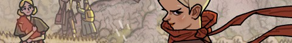
The Harvey-nominated third volume is now available from Archaia!
Exiled princesses Pira and Lono seek the Treasure of the Waterfall, only to be confronted by the villainous Nole and Kyle,
two remnants from Lono's fallen kingdom. The disastrous encounter leads to the princesses being split up and their friend
-- the fire spirit Yonder -- sapped of all power.
Separated for the first time since their escape to Spera, the princesses must now journey to the forest of the wood spirit Pom
in order to reunite and save their friend.
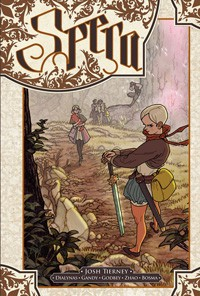
Spera: Volume III is written and edited by creator Josh Tierney and features main story art by Michael Dialynas,
Meg Gandy, Cory Godbey, Amei Zhao and Sam Bosma.
The book includes short comics by Kyla Vanderklugt, Ken Niimura, series character designer and cover artist Afu Chan,
Giannis Milonogiannis, Jake Wyatt and Rebecca Mock. Also included are pin-ups by Hannah Christenson, Olivier Pichard (of Atelier Sentô),
Angie Wang, Emma Ríos, Ashley Davis and Shelly Chen. The book also features special endpapers created by Olivier Pichard.
>>>> Order the book
>>>> Purchase digital comics
SPERA: VOLUME II
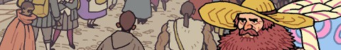
The Shuster-nominated second volume is now available from Archaia!
In their quest for adventure, Princesses Pira and Lono – along with their companions,
the fire spirit Yonder and warrior cat Chobo – have made their way to the big city.
There they must contend with strange laws, stranger men and the strangest monsters if they wish
to join the city's prestigious Adventurer's Guild – and then, only if the enigmatic Rale will let them!
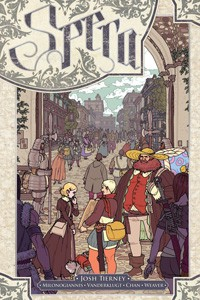
Spera: Volume II is written and edited by creator Josh Tierney and features
main story art by Giannis Milonogiannis, Kyla Vanderklugt, Afu Chan and Timothy Weaver.
Shorts are by Michael Dialynas, Mikkel Sommer, Paul Maybury, Kris Mukai,
Zac Gorman, Louis Roskosch, Rachel S. (Baru), Julia Scott, Anna Wieszczyk (lettered by Ed Brisson),
Roman Muradov and Polly Guo.
Also included are pin-ups by Afu Chan, Roxie Vizcarra, Nick Edwards, Jake Wyatt and Joanna Krótka.
>>>> Order the book
>>>> Purchase digital comics
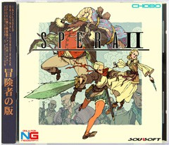
Spera: Volume II
Official Soundtrack
Created by Giannis Milonogiannis
Cover art by Afu Chan
>>>> Download for free
SPERA: VOLUME I
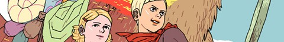
The Eisner and Shuster-nominated first volume is now available from Archaia!
"With beauty as its tool and mischief in mind, this book is a winner all the way."
- Publishers Weekly
Lono's life as a princess consisted of sitting, reading, and dreaming – until the day Pira, princess of a neighboring kingdom,
arrived with news of a waking nightmare! With the help of Pira's best friend – a fire spirit in the form of a dog named Yonder – the
princesses now find themselves in a race against evil. The goal: Spera, a magical realm of which the princesses had only ever heard the tallest tales.
The prize: their very lives!
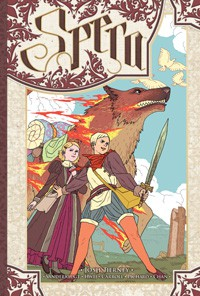
Written, created, and edited by Josh Tierney, Spera Volume 1 is the first book in an ongoing series of graphic novels
illustrated by artists from around the world.
The first half of this 176-page hardcover is a remake of the original story, illustrated here by Kyla Vanderklugt,
Hwei, Emily Carroll and Olivier Pichard.
The second half is a collection of short comics illustrated by Jordyn F. Bochon,
Cécile Brun, Luke Pearson, Leela Wagner and Matt Marblo.
The book features cover art and character designs by Afu Chan.
>>>> Order the book
>>>> Purchase digital comics